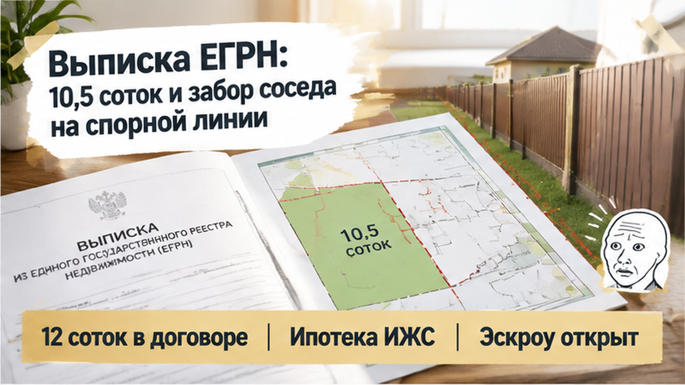
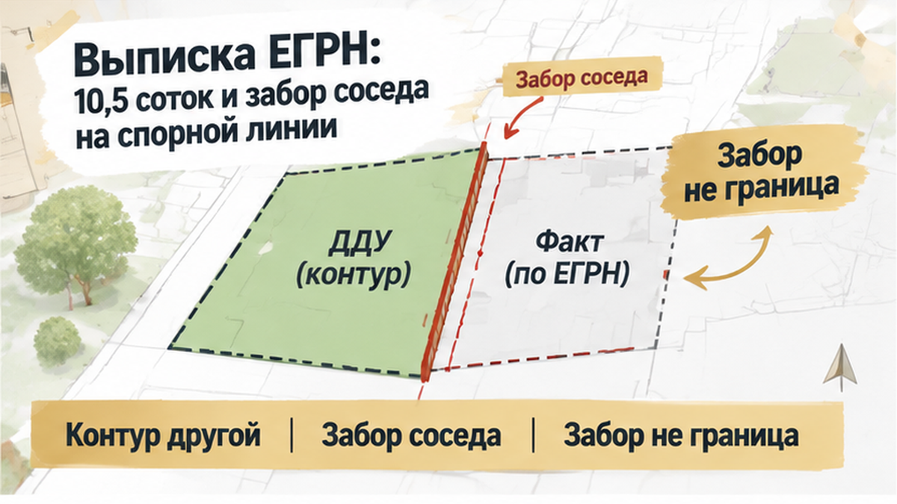

В Тюмени семья подписала ДДУ на дом, а перед приёмкой обнаружила в выписке ЕГРН недостачу 1,5 сотки. В день, когда нужно было решать вопрос с ключами, на столе оказались два документа с разными параметрами участка. Приложение к договору обещало одну территорию, реестр показывал другую. На спорной линии уже стоял соседский забор, а застройщик предлагал подписать акт и разобраться с межеванием потом. Можно ли принимать дом, если с землёй под ним и вокруг него ещё нет ясности?
Я Святослав Шакин, The Риэлтор, личный риэлтор в Тюмени. Расскажу изнутри, где в покупке дома заканчивается «всё готово» и начинается проверка документов. Такие разборы публикую в Telegram и MAX.

Начиналось всё понятно: коттеджный посёлок, новый дом, земля, ипотека ИЖС. Расчёты через эскроу. На встрече показывали генплан — можно представить, где будет дом и сколько места останется вокруг.
Для покупателя это одна покупка. Не отдельно стены, отдельно полоска на плане. Семья выбирает дом с участком, которым рассчитывает пользоваться после переезда. И платит за оговорённые параметры, а не за обещание позже разобраться на местности.
Здесь важная деталь: 12 соток были указаны в приложении к ДДУ. Там же проходила линия границы. То есть площадь осталась не только в разговоре с продавцом или на красивой картинке посёлка. У семьи был документ, с которым можно сравнивать результат.
Обычный покупатель смотрит на генплан: нравится ли расположение, удобно ли заезжать. Я смотрю ещё и на то, что из этой картинки попало в подписанный договор. Потому что при расхождении разговор начнётся не с «нам показывали», а с «что застройщик обязался передать».
Для дома в малоэтажном жилом комплексе по ДДУ сведения о земле — часть договора по статье 4 закона № 214-ФЗ. Проверяются площадь, вид права, кадастровый номер, если он присвоен, а в применимых случаях — условный номер по проекту межевания. Нужны также предусмотренные сведения о документах планировки и межевания территории, план дома.
Звучит канцелярски? На кухонном языке вопрос простой: какую именно землю вы покупаете вместе с домом? Не «примерно вот эту», а определённый участок на понятных условиях.
Ипотечное одобрение этот вопрос не снимает. Эскроу тоже не подтверждает, что каждая линия совпадает с договором. Я уже разбирал, почему одобренная ипотека ещё не означает, что вопрос с эскроу решён. Здесь проверка дошла до следующего рубежа: что фактически передают покупателю.

Перед приёмкой семья снова открыла приложение. Только теперь смотрела не на весь посёлок, а на контур своей земли. На месте этот контур не складывался с нарисованным: на спорной линии находился забор соседа.
Вот тут разговор о ключах пришлось отложить. Не потому, что забор автоматически доказывает чужое право. А потому, что сначала нужно понять, где заканчивается приобретаемый участок.
У ограждения есть бытовая убедительность: стоит — значит, так и положено. Но забор не устанавливает юридическую границу. Нельзя признать соседа правым только по наличию ограждения. Нельзя и пообещать покупателю его перенос, посмотрев лишь приложение к ДДУ.
Я бы не начинал с выяснения отношений через забор. Сначала — документы. Иначе можно долго спорить о том, кто куда зашёл, не установив саму границу, относительно которой идёт спор.
Причём одной площади мало. Количество соток отвечает на вопрос «сколько», а расположение границ — «где». Даже совпавшая итоговая цифра не объяснила бы, ту ли территорию передают семье.
Поэтому нужен следующий документ: выписка ЕГРН именно по земельному участку. Выписка на дом её не заменяет. С домом всё может совпасть, а с землёй — нет. И до подписи под актом эти две части покупки нужно проверить вместе.